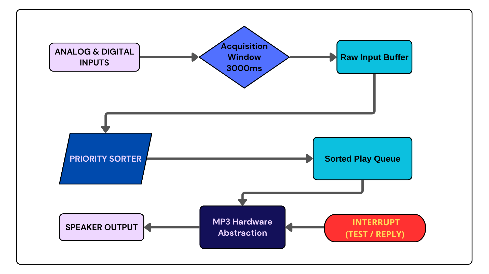

Deterministic Safety Systems & Concurrent Handling

In industrial safety environments, multiple fault conditions often occur simultaneously (cascade failure). A standard sequential loop (super-loop) architecture is insufficient, as processing a low-priority event (e.g., "Low Water Level") could block the announcement of a critical life-safety event (e.g., "Fire Detected").
The objective was to design a deterministic annunciator panel capable of monitoring 10+ hybrid inputs (Analog/Digital). The system required a non-blocking architecture to buffer incoming concurrent signals, sort them by criticality, and execute audio alerts in a strictly defined priority order.
To solve the concurrency problem, I implemented a Real-Time Operating System (RTOS) architecture. The firmware separates input polling from audio processing into distinct threads, communicating via dynamic buffers.
Upon the first trigger, the system initiates a 3000ms "Listening Window". During this non-blocking phase, high-frequency interrupts scan all analog and digital inputs to capture the full scope of the cascade failure before taking action.
Detected faults are pushed into a buffer array. A sorting algorithm then reorders the buffer based on a pre-defined Criticality Index (Row 1 of the configuration table), ensuring that regardless of detection order, the most critical alert is vocalized first.
The logic follows a strict industrial state machine to ensure reliability (as seen in the diagram above):
The video below demonstrates the system handling concurrent inputs. Note how the system captures multiple triggers using potentiometers (simulating analog sensors) and switches, then reorganizes the playback order based on priority logic, not activation order.
Bench test: Simulating cascade failure with Tilt & Proximity sensors.
The project was delivered as a turnkey solution, including the compiled firmware, full electrical schematics for the custom harness, and source code with documentation for the abstraction layers. This enables the client to scale the system (e.g., adding Alarm 11-14) by simply modifying the configuration arrays without touching the core logic.